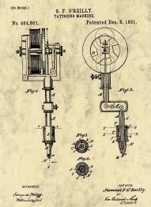

Thomas Edison invented the electric pen in Newark, New Jersey, in 1876 with the intention of being a duplicating device. In 1891, Samuel O'Reilly modified it by adding a tube and needle system with an ink reservoir that could introduce ink into the skin. This was the original Rotary Tattoo Machine.
- Samuel O'Reilly patent 1891
Click here for more in-depth descriptions.
A link to a similar website.
The good things about the similar site is that it is very easy to read and follow. The site appears to be very simple and has good information. All the pictures are also credited as well as sources for quotations.